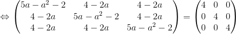
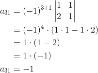

Exerciții și probleme rezolvate pentru profilul mate-info
1. Această problemă a fost dată în sesiunea specială a anului 2015, pentru profilul matematică-informatică, la subiectul II, exercițiul 1.
Bacalaureat Matematică 2015 | Mate-info | Sesiunea specială | Subiectul II
Se consideră matricele  și
și  , unde
, unde  este număr real.
este număr real.
a. Arătați că  .
.
b. Arătați că  , pentru orice număr real .
, pentru orice număr real .
c. Determinați numerele reale pentru care
Rezolvare:
a. Calculăm  folosind regula triunghiului.
folosind regula triunghiului.


b. Folosind operația de înmulțire a două matrice, vom avea că:


c. Avem că:
Atunci,


Dacă  .
.
Dacă  , atunci:
, atunci:

Cum  , ecuația nu are rădăcini reale.
, ecuația nu are rădăcini reale.
Deci  .
.
2. Această problemă a fost dată în sesiunea august-septembrie a anului 2014, pentru profilul matematică-informatică, la subiectul II, exercițiul 1.
Bacalaureat Matematică 2014 | Mate-Info | Sesiunea august-septembrie | Subiectul II
Se consideră matricea  , unde
, unde  este număr real.
este număr real.
a. Arătați că  .
.
b. Arătați că  pentru orice numere reale și
pentru orice numere reale și  .
.
c. Determinați numerele reale știind că  .
.
Rezolvare:
a. Calculăm 


b. Arătăm că , 
![\begin{align*} &A(x)\cdot A(y)=\\\\ &\begin{pmatrix} 1 & 0 &0 \\ x& 1 & 0\\ 2x^2-2x& 4x &1 \end{pmatrix}\cdot \begin{pmatrix} 1 & 0 &0 \\ y& 1 & 0\\ 2y^2-2y& 4y &1 \end{pmatrix}\\\\ &=\begin{pmatrix} 1\cdot 1+0\cdot y+0\cdot (2y^2-2y) & 1\cdot 0+0\cdot 1+0\cdot 4y &1\cdot 0+0\cdot 0+0\cdot 1 \\ x\cdot 1+1\cdot y+0\cdot(2y^2-2y)& x\cdot 0+ 1\cdot 1+0\cdot 4y & x\cdot 0+1\cdot 0+0\cdot 1\\ (2x^2-2x)\cdot 1+4x\cdot y+1\cdot(2y^2-2y)& (2y^2-2y)\cdot 0+4x\cdot 1+1\cdot 4y &(2y^2-2y)\cdot 0+4x\cdot 0+1\cdot 1 \end{pmatrix}\\\\ &=\begin{pmatrix} 1 & 0 &0 \\ x+y& 1 & 0\\ 2x^2+4xy+2y^2-2x-2y& 4x+4y &1 \end{pmatrix} \end{align*}](../../media/webbooks/283/1820/images/equations/fi8psn4uhf1xt6hekqf_na==.svg)
 ,
,
c.
, 


Metoda I


Metoda II

3. Această problemă a fost dată în sesiunea specială a anului 2013, pentru profilul matematică-informatică, la subiectul II, exercițiul 1.
Bacalaureat Matematică 2013 | Mate - Info | Sesiunea specială | Subiectul II
Pentru fiecare număr real  se consideră matricea
se consideră matricea 
a. Calculați 
b. Determinați valorile reale ale lui pentru care 
c. Determinați inversa matricei 
Rezolvare:
a. Calculăm 


b. Calculăm 
![\begin{align*} \Big(A(a)\Big)^2&=\begin{pmatrix}a&1&1\\1&a&1\\1&1&a \end{pmatrix}\cdot\begin{pmatrix}a&1&1\\1&a&1\\1&1&a \end{pmatrix}\\\\ &=\begin{pmatrix} a\cdot a+1\cdot1+1\cdot1 & a\cdot1+1\cdot a+1\cdot1 & a\cdot1+1\cdot1+1\cdot a\\ 1\cdot a+a\cdot1+1\cdot1 & 1\cdot1+a\cdot a+1\cdot1&1\cdot1+a\cdot1+1\cdot a\\1\cdot a+1\cdot1+a\cdot1 & 1\cdot1+1\cdot a+a\cdot1 & 1\cdot1+1\cdot1+a\cdot a \end{pmatrix}\\\\ &= \begin{pmatrix} a^2+1+1 &a+a+1 &a+1+a\\ a+a+1 & 1+a^2+1 & 1+a+a \\ a+1+a & 1+a+a & 1+1+a^2\end{pmatrix}\\\\ \Big(A(a)\Big)^2&= \begin{pmatrix}a^2+2 & 2a+1 & 2a+1\\2a+1 & a^2+2 & 2a+1\\2a+1 & 2a+1 & a^2+2 \end{pmatrix} \end{align*}](../../media/webbooks/283/1820/images/equations/gyzfl946qoyi6meduaonta==.gif)
Atunci:
![\begin{align*} 5A(a)-\Big(A(a)\Big)^2 &=\begin{pmatrix}5a&5&5\\5&5a&5\\5&5&5a \end{pmatrix}- \begin{pmatrix}a^2+2 & 2a+1 & 2a+1\\2a+1 & a^2+2 & 2a+1\\2a+1 & 2a+1 & a^2+2 \end{pmatrix}\\\\ &=\begin{pmatrix}5a-(a^2+2) & 5-(2a+1) & 5-(2a+1)\\5-(2a+1) & 5a-(a^2+2) & 5-(2a+1)\\5-(2a+1) & 5-(2a+1) & 5a-(a^2+2) \end{pmatrix}\\\\ &=\begin{pmatrix}5a-a^2-2 & 5-2a-1 & 5-2a-1\\5-2a-1 & 5a-a^2-2 & 5-2a-1\\5-2a-1 & 5-2a-1 & 5a-a^2-2 \end{pmatrix}\\\\ &=\begin{pmatrix}5a-a^2-2 & 4-2a & 4-2a\\4-2a & 5a-a^2-2 & 4-2a\\4-2a & 4-2a & 5a-a^2-2 \end{pmatrix} \end{align*}](../../media/webbooks/283/1820/images/equations/zg70txxsp7edyp6uhi7g8g==.gif)


Rezolvăm ecuația  .
.

Soluția  nu verifică ecuația , deci singura soluție este
nu verifică ecuația , deci singura soluție este 
c. Verificăm dacă matricea  este inversabilă, calculându-i determinantul:
este inversabilă, calculându-i determinantul:

 matricea este inversabilă.
matricea este inversabilă.
Determinăm transpusa matricei :
Construim matricea adjunctă astfel:



Determinăm inversa matricei cu următoarea formulă:
Inversa matricei este matricea  .
.
4. Această problemă a fost dată în sesiunea august-septembrie a anului 2013, pentru profilul matematică-informatică, la subiectul II, exercițiul 1.
Bacalaureat Matematică 2013 | Mate - Info | Sesiunea august - septembrie | Subiectul II
Pentru fiecare număr real  se consideră matricea
se consideră matricea 
a. Calculați 
b. Determinați numerele reale știind că 
c. Arătați că 
Rezolvare:
a. Calculăm


b. Calculăm 
![\begin{align*} &A(m)\cdot A(-m) =\\\\&= \begin{pmatrix} 1&1&1\\m&0&0\\m&0&m\end{pmatrix}\cdot \begin{pmatrix} 1&1&1\\-m&0&0\\-m&0&-m\end{pmatrix}\\\\ &=\begin{pmatrix} 1\cdot1+1\cdot(-m)+1\cdot(-m)&1\cdot1+1\cdot0+1\cdot0&1\cdot1+1\cdot0+1\cdot(-m)\\m\cdot1+0\cdot(-m)+0\cdot(-m)&m\cdot1+0\cdot0+0\cdot0&m\cdot1+0\cdot0+0\cdot(-m)\\m\cdot1+0\cdot(-m)+m\cdot(-m)&m\cdot1+0\cdot0+m\cdot0&m\cdot1+0\cdot0+m\cdot(-m)\end{pmatrix}\\\\ &= \begin{pmatrix} 1-m-m&1+0+0&1+0-m\\m+0+0&m+0+0&m+0+0\\m+0-m^2&m+0+0&m+0-m^2\end{pmatrix}\\\\ &=\begin{pmatrix} 1-2m&1&1-m\\m&m&m\\m-m^2&m&m-m^2\end{pmatrix} \end{align*}](../../media/webbooks/283/1820/images/equations/uzwklirddi0rww1byvxdca==.svg)
Dar știm că 

Luăm separat ecuația 
Verificăm dacă soluția  verifică celelalte ecuații din sistemul de mai sus:
verifică celelalte ecuații din sistemul de mai sus:
Toate egalitățiile de mai sus sunt false, deci soluția nu ne convine.
Așadar, doar soluția  este cea care ne convine.
este cea care ne convine.
c. Calculăm suma primelor 101 matrice:
![\begin{align*} A(1)&+A(2)+\dotsc+A(101) = \begin{pmatrix} 1&1&1\\1&0&0\\1&0&1 \end{pmatrix}+\begin{pmatrix} 1&1&1\\2&0&0\\2&0&2 \end{pmatrix}+\dotsc+\begin{pmatrix} 1&1&1\\101&0&0\\101&0&101 \end{pmatrix}\\\\ &=\begin{pmatrix} 1+1+\dotsc+1&1+1+\dotsc+1&1+1+\dotsc+1\\1+2+\dotsc+101&0+0+\dotsc+0&0+0+\dotsc+0\\1+2+\dotsc+101&0+0+\dotsc+0&1+2+\dotsc+101 \end{pmatrix}\\\\ &=\begin{pmatrix} 1\cdot101&1\cdot101&1\cdot101\\\\ \displaystyle\frac{101(101+1)}{2}&0\cdot101&0\cdot101\\\\\displaystyle\frac{101(101+1)}{2}&0\cdot101&\displaystyle\frac{101(101+1)}{2} \end{pmatrix}\\\\ &=\begin{pmatrix} 101&101&101\\\\ \displaystyle\frac{101\cdot102}{2}&0&0\\\\ \displaystyle\frac{101\cdot102}{2}&0&\displaystyle\frac{101\cdot102}{2} \end{pmatrix}\\\\ &=\begin{pmatrix} 101&101&101\\ 101\cdot51&0&0\\101\cdot51&0&101\cdot51 \end{pmatrix} \end{align*}](../../media/webbooks/283/1820/images/equations/h97hls4rsu83xe7zrxxtoa==.gif)

Calculăm 

Pentru a vedea mai multe exemple de probleme cu matrice rezolvate, poți accesa unul din eBook-urile următoare (Subiectul II, exercițiul 1):